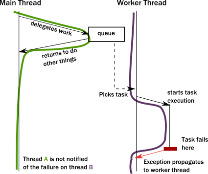
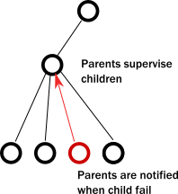

What problems does the actor model solve?
Akka uses the actor model to overcome the limitations of traditional object-oriented programming models and meet the unique challenges of highly distributed systems. To fully understand why the actor model is necessary, it helps to identify mismatches between traditional approaches to programming and the realities of concurrent and distributed computing.
The illusion of encapsulation
Object-oriented programming (OOP) is a widely-accepted, familiar programming model. One of its core pillars is encapsulation. Encapsulation dictates that the internal data of an object is not accessible directly from the outside; it can only be modified by invoking a set of curated methods. The object is responsible for exposing safe operations that protect the invariant nature of its encapsulated data.
For example, operations on an ordered binary tree implementation must not allow violation of the tree ordering invariant. Callers expect the ordering to be intact and when querying the tree for a certain piece of data, they need to be able to rely on this constraint.
When we analyze OOP runtime behavior, we sometimes draw a message sequence chart showing the interactions of method calls. For example:

Unfortunately, the above diagram does not accurately represent the lifelines of the instances during execution. In reality, a thread executes all these calls, and the enforcement of invariants occurs on the same thread from which the method was called. Updating the diagram with the thread of execution, it looks like this:

The significance of this clarification becomes clear when you try to model what happens with multiple threads. Suddenly, our neatly drawn diagram becomes inadequate. We can try to illustrate multiple threads accessing the same instance:

There is a section of execution where two threads enter the same method. Unfortunately, the encapsulation model of objects does not guarantee anything about what happens in that section. Instructions of the two invocations can be interleaved in arbitrary ways which eliminate any hope for keeping the invariants intact without some type of coordination between two threads. Now, imagine this issue compounded by the existence of many threads.
The common approach to solving this problem is to add a lock around these methods. While this ensures that at most one thread will enter the method at any given time, this is a very costly strategy:
- Locks seriously limit concurrency, they are very costly on modern CPU architectures, requiring heavy-lifting from the operating system to suspend the thread and restore it later.
- The caller thread is now blocked, so it cannot do any other meaningful work. Even in desktop applications this is unacceptable, we want to keep user-facing parts of applications (its UI) to be responsive even when a long background job is running. In the backend, blocking is outright wasteful. One might think that this can be compensated by launching new threads, but threads are also a costly abstraction.
- Locks introduce a new menace: deadlocks.
These realities result in a no-win situation:
- Without sufficient locks, the state gets corrupted.
- With many locks in place, performance suffers and very easily leads to deadlocks.
Additionally, locks only really work well locally. When it comes to coordinating across multiple machines, the only alternative is distributed locks. Unfortunately, distributed locks are several magnitudes less efficient than local locks and usually impose a hard limit on scaling out. Distributed lock protocols require several communication round-trips over the network across multiple machines, so latency goes through the roof.
In Object Oriented languages we rarely think about threads or linear execution paths in general. We often envision a system as a network of object instances that react to method calls, modify their internal state, then communicate with each other via method calls driving the whole application state forward:

However, in a multi-threaded distributed environment, what actually happens is that threads “traverse” this network of object instances by following method calls. As a result, threads are what really drive execution:

In summary:
- Objects can only guarantee encapsulation (protection of invariants) in the face of single-threaded access, multi-thread execution almost always leads to corrupted internal state. Every invariant can be violated by having two contending threads in the same code segment.
- While locks seem to be the natural remedy to uphold encapsulation with multiple threads, in practice they are inefficient and easily lead to deadlocks in any application of real-world scale.
- Locks work locally, attempts to make them distributed exist, but offer limited potential for scaling out.
The illusion of shared memory on modern computer architectures
Programming models of the 80’-90’s conceptualize that writing to a variable means writing to a memory location directly (which somewhat muddies the water that local variables might exist only in registers). On modern architectures - if we simplify things a bit - CPUs are writing to cache lines instead of writing to memory directly. Most of these caches are local to the CPU core, that is, writes by one core are not visible by another. In order to make local changes visible to another core, and hence to another thread, the cache line needs to be shipped to the other core’s cache.
On the JVM, we have to explicitly denote memory locations to be shared across threads by using volatile markers or Atomic wrappers. Otherwise, we can access them only in a locked section. Why don’t we just mark all variables as volatile? Because shipping cache lines across cores is a very costly operation! Doing so would implicitly stall the cores involved from doing additional work, and result in bottlenecks on the cache coherence protocol (the protocol CPUs use to transfer cache lines between main memory and other CPUs). The result is magnitudes of slowdown.
Even for developers aware of this situation, figuring out which memory locations should be marked as volatile, or which atomic structures to use is a dark art.
In summary:
- There is no real shared memory anymore, CPU cores pass chunks of data (cache lines) explicitly to each other just as computers on a network do. Inter-CPU communication and network communication have more in common than many realize. Passing messages is the norm now be it across CPUs or networked computers.
- Instead of hiding the message passing aspect through variables marked as shared or using atomic data structures, a more disciplined and principled approach is to keep state local to a concurrent entity and propagate data or events between concurrent entities explicitly via messages.
The illusion of a call stack
Today, we often take call stacks for granted. But, they were invented in an era where concurrent programming was not as important because multi-CPU systems were not common. Call stacks do not cross threads and hence, do not model asynchronous call chains.
The problem arises when a thread intends to delegate a task to the “background”. In practice, this really means delegating to another thread. This cannot be a simple method/function call because calls are strictly local to the thread. What usually happens, is that the “caller” puts an object into a memory location shared by a worker thread (“callee”), which in turn, picks it up in some event loop. This allows the “caller” thread to move on and do other tasks.
The first issue is, how can the “caller” be notified of the completion of the task? But a more serious issue arises when a task fails with an exception. Where does the exception propagate to? It will propagate to the exception handler of the worker thread completely ignoring who the actual “caller” was:

This is a serious problem. How does the worker thread deal with the situation? It likely cannot fix the issue as it is usually oblivious of the purpose of the failed task. The “caller” thread needs to be notified somehow, but there is no call stack to unwind with an exception. Failure notification can only be done via a side-channel, for example putting an error code where the “caller” thread otherwise expects the result once ready. If this notification is not in place, the “caller” never gets notified of a failure and the task is lost! This is surprisingly similar to how networked systems work where messages/requests can get lost/fail without any notification.
This bad situation gets worse when things go really wrong and a worker backed by a thread encounters a bug and ends up in an unrecoverable situation. For example, an internal exception caused by a bug bubbles up to the root of the thread and makes the thread shut down. This immediately raises the question, who should restart the normal operation of the service hosted by the thread, and how should it be restored to a known-good state? At first glance, this might seem manageable, but we are suddenly faced by a new, unexpected phenomena: the actual task, that the thread was currently working on, is no longer in the shared memory location where tasks are taken from (usually a queue). In fact, due to the exception reaching to the top, unwinding all of the call stack, the task state is fully lost! We have lost a message even though this is local communication with no networking involved (where message losses are to be expected).
In summary:
- To achieve any meaningful concurrency and performance on current systems, threads must delegate tasks among each other in an efficient way without blocking. With this style of task-delegating concurrency (and even more so with networked/distributed computing) call stack-based error handling breaks down and new, explicit error signaling mechanisms need to be introduced. Failures become part of the domain model.
- Concurrent systems with work delegation needs to handle service faults and have principled means to recover from them. Clients of such services need to be aware that tasks/messages might get lost during restarts. Even if loss does not happen, a response might be delayed arbitrarily due to previously enqueued tasks (a long queue), delays caused by garbage collection, etc. In face of these, concurrent systems should handle response deadlines in the form of timeouts, just like networked/distributed systems.
How the actor model meets the needs of concurrent, distributed systems
As described in the sections above, common programming practices cannot properly address the needs of modern concurrent and distributed systems. Thankfully, we don’t need to scrap everything we know. Instead, the actor model addresses these shortcomings in a principled way, allowing systems to behave in a way that better matches our mental model.
In particular, we would like to:
- Enforce encapsulation without resorting to locks.
- Use the model of cooperative entities reacting to signals, changing state and sending signals to each other to drive the whole application forward.
- Stop worrying about an executing mechanism which is a mismatch to our world view.
The actor model accomplishes all of these goals. The following topics describe how.
Usage of message passing avoids locking and blocking
Instead of calling methods, actors send messages to each other. Sending a message does not transfer the thread of execution from the sender to the destination. An actor can send a message and continue without blocking. It can, therefore, do more work, send and receive messages.
With objects, when a method returns, it releases control of its executing thread. In this respect, actors behave much like objects, they react to messages and return execution when they finish processing the current message. In this way, actors actually achieve the execution we imagined for objects:

An important difference of passing messages instead of calling methods is that messages have no return value. By sending a message, an actor delegates work to another actor. As we saw in The illusion of a call stack, if it expected a return value, the sending actor would either need to block or to execute the other actor’s work on the same thread. Instead, the receiving actor delivers the results in a reply message.
The second key change we need in our model is to reinstate encapsulation. Actors react to messages just like objects “react” to methods invoked on them. The difference is that instead of multiple threads “protruding” into our actor and wreaking havoc to internal state and invariants, actors execute independently from the senders of a message, and they react to incoming messages sequentially, one at a time. While each actor processes messages sent to it sequentially, different actors work concurrently with each other so an actor system can process as many messages simultaneously as many processor cores are available on the machine. Since there is always at most one message being processed per actor the invariants of an actor can be kept without synchronization. This happens automatically without using locks:

In summary, this is what happens when an actor receives a message:
- The actor adds the message to the end of a queue.
- If the actor was not scheduled for execution, it is marked as ready to execute.
- A (hidden) scheduler entity takes the actor and starts executing it.
- Actor picks the message from the front of the queue.
- Actor modifies internal state, sends messages to other actors.
- The actor is unscheduled.
To accomplish this behavior, actors have:
- A Mailbox (the queue where messages end up).
- A Behavior (the state of the actor, internal variables etc.).
- Messages (pieces of data representing a signal, similar to method calls and their parameters).
- An Execution Environment (the machinery that takes actors that have messages to react to and invokes their message handling code).
- An Address (more on this later).
Messages are put into so-called Mailboxes of Actors. The Behavior of the actor describes how the actor responds to messages (like sending more messages and/or changing state). An Execution Environment orchestrates a pool of threads to drive all these actions completely transparently.
This is a very simple model and it solves the issues enumerated previously:
- Encapsulation is preserved by decoupling execution from signaling (method calls transfer execution, message passing does not).
- There is no need for locks. Modifying the internal state of an actor is only possible via messages, which are processed one at a time eliminating races when trying to keep invariants.
- There are no locks used anywhere, and senders are not blocked. Millions of actors can be efficiently scheduled on a dozen of threads reaching the full potential of modern CPUs. Task delegation is the natural mode of operation for actors.
- State of actors is local and not shared, changes and data is propagated via messages, which maps to how modern memory hierarchy actually works. In many cases, this means transferring over only the cache lines that contain the data in the message while keeping local state and data cached at the original core. The same model maps exactly to remote communication where the state is kept in the RAM of machines and changes/data is propagated over the network as packets.
Actors handle error situations gracefully
Since we have no longer a shared call stack between actors that send messages to each other, we need to handle error situations differently. There are two kinds of errors we need to consider:
- The first case is when the delegated task on the target actor failed due to an error in the task (typically some validation issue, like a non-existent user ID). In this case, the service encapsulated by the target actor is intact, it is only the task that itself is erroneous. The service actor should reply to the sender with a message, presenting the error case. There is nothing special here, errors are part of the domain and hence become ordinary messages.
- The second case is when a service itself encounters an internal fault. Akka enforces that all actors are organized into a tree-like hierarchy, i.e. an actor that creates another actor becomes the parent of that new actor. This is very similar how operating systems organize processes into a tree. Just like with processes, when an actor fails, its parent actor is notified and it can react to the failure. Also, if the parent actor is stopped, all of its children are recursively stopped, too. This service is called supervision and it is central to Akka.

A supervisor (parent) can decide to restart its child actors on certain types of failures or stop them completely on others. Children never go silently dead (with the notable exception of entering an infinite loop) instead they are either failing and their parent can react to the fault, or they are stopped (in which case interested parties are automatically notified). There is always a responsible entity for managing an actor: its parent. Restarts are not visible from the outside: collaborating actors can keep continuing sending messages while the target actor restarts.